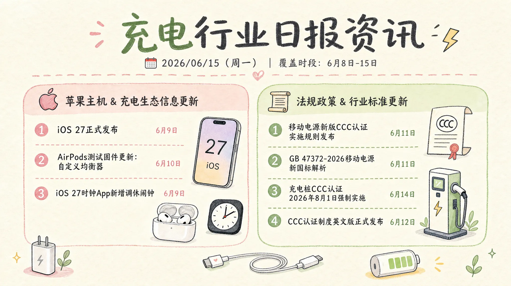

Set the information brief
I translated audience preferences into content priorities and created evaluation tables for source credibility and industry analysis.
02 / TORRAS · INTERNSHIP
I explored how an AI-assisted workflow could turn industry news into recurring visual updates.

01 / BACKGROUND
The team needed to follow charging accessories, competitor launches and policy changes. I gathered preferences that favoured visual updates two or three times a week, especially new products and regulations, and used them to shape the content brief.
Counts from seven internal responses. These findings guided this project; they do not represent a wider audience.
Each bar uses the same scale: 0–7 respondents.
02 / MY CONTRIBUTION
I translated audience preferences into content priorities and created evaluation tables for source credibility and industry analysis.
I compared AI tools, refined the agent’s output format and tested webhook uploads to Feishu tables. I proposed a shared agent to reduce the influence of personal conversations.
I used WorkBuddy to pass prompts into Lovart, download the generated images and name them by record ID. I worked through the remaining delivery gaps with the efficiency engineering team.
RESPONSIBILITIES / CONSTRAINTS
SELECTED CUSTOM SKILLS
Industry reportStructure charging-industry updates
Webhook transferSend structured fields to Feishu tables
Product frontier briefGather design, hardware and AI developments
03 / ACTUAL WORKFLOW
Schematic · Status at the stage recorded in my internship log
VALIDATED / COMPLETED STEPS
STILL IN PROGRESS / NOT COMPLETED AT THAT STAGE
The automatic return path for local images was still unfinished.
Timed card publishing and reliable agent scheduling still needed work.
I validated individual steps and the visual-production MVP; the recorded workflow still included manual sending.
04 / OUTPUTS
~60%less preparation time
Based on my personal calculation.
Topic groupingSeparate panels organise ecosystem news and policy updates.
Visible datesA coverage window and entry dates give each update context.
Compact entriesShort items and visual cues make the brief easier to scan.
DELIVERY FORMAT / SCHEMATIC
The observed Feishu post places a dated heading and visual brief above a list of items. I have redrawn that hierarchy with neutral placeholders, not original messages.
This illustrates post structure, not proof of automated or scheduled publishing.
Topic section
05 / REFLECTION
I learned to evaluate content quality, visual production and delivery reliability separately. When complex scheduled tasks lost earlier instructions, my next step was to simplify each task and stabilise its output before connecting the remaining delivery steps.